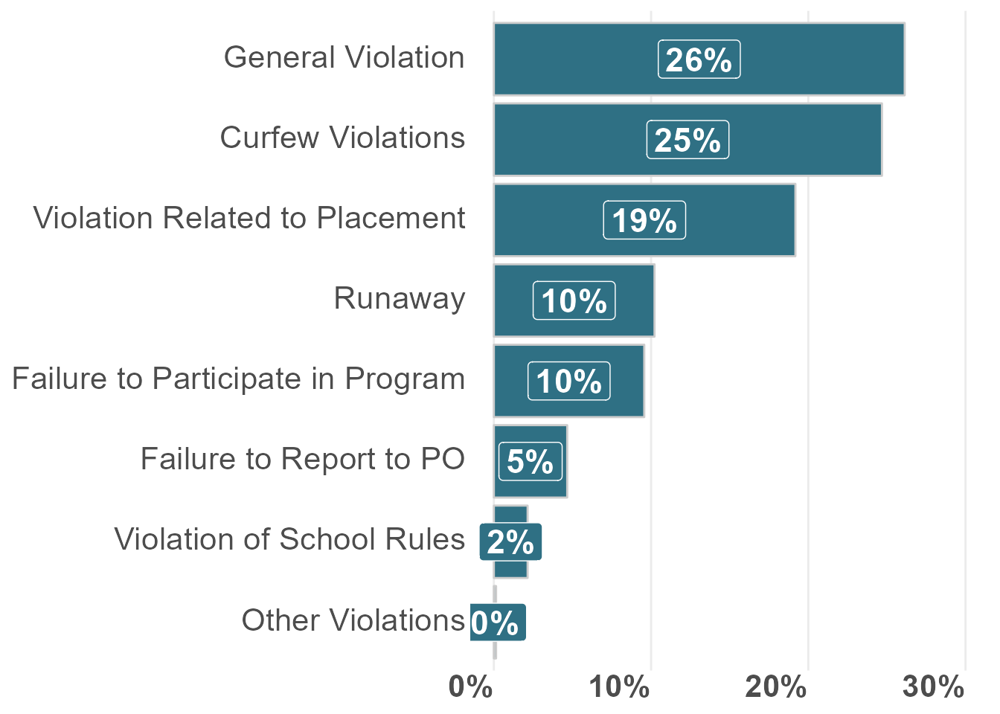
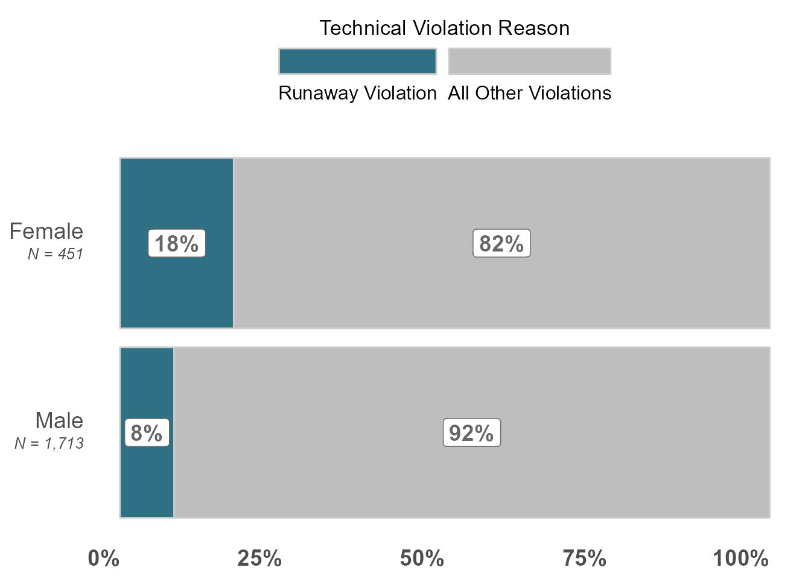
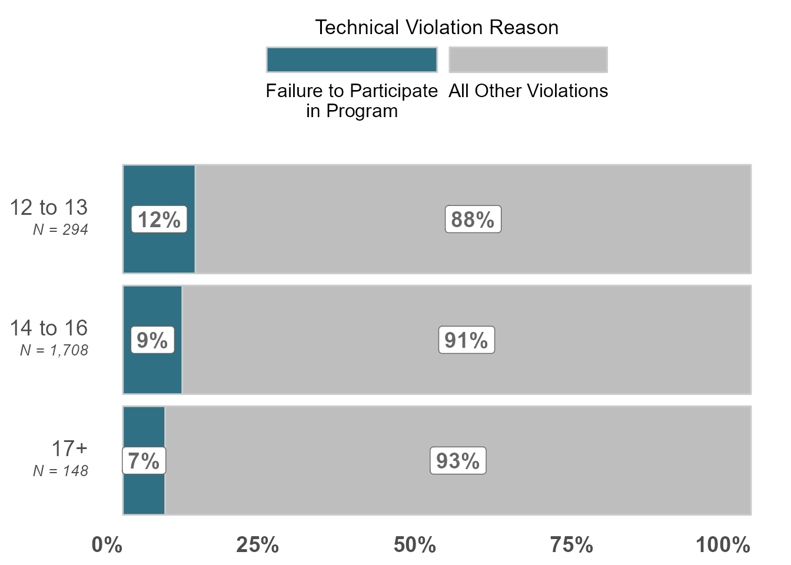

| FY of Violation | All Technical Violations (N) | General Violation (row %) | Curfew Violations (row %) | Failure to Participate in Program (row %) | Failure to Report to PO (row %) | Violation Related to Placement (row %) | Runaway (row %) | Violation of School Rules (row %) | Other Violations (row %) |
|---|---|---|---|---|---|---|---|---|---|
| 2016 | 90 | 16.7% | 17.8% | 22.2% | 1.1% | 24.4% | 10.0% | 5.6% | 0.0% |
| 2017 | 292 | 25.0% | 22.6% | 13.7% | 2.4% | 22.6% | 11.0% | 1.4% | 0.0% |
| 2018 | 542 | 31.7% | 20.3% | 11.3% | 3.0% | 20.1% | 8.3% | 1.7% | 0.2% |
| 2019 | 521 | 33.2% | 21.9% | 8.1% | 5.6% | 16.7% | 10.7% | 1.7% | 0.0% |
| 2020 | 318 | 23.0% | 30.2% | 6.6% | 7.2% | 16.4% | 9.1% | 2.8% | 0.6% |
| 2021 | 159 | 10.7% | 40.9% | 7.5% | 6.3% | 18.2% | 11.9% | 1.3% | 0.0% |
| 2022 | 221 | 16.7% | 28.1% | 4.1% | 6.3% | 20.8% | 13.1% | 3.6% | 0.0% |
| Overall | 2,143 | 26.1% | 24.7% | 9.6% | 4.7% | 19.2% | 10.2% | 2.1% | 0.1% |
Why do youth receive technical violations?
Why do youth receive technical violations?
What are the most common reasons for technical violations when the violation was the primary offense? How do reasons vary across race/ethnicity, sex, and risk level? (Technical violation N: 2,333)
What are the most common offenses when the technical violation was not the primary offense? There are two ways to run this analysis – types of new offenses across all violations or only types of new offenses where there is a technical violation listed. Which do we want? (New offense N: 564)
Double check following coding/grouping of technical violations with team:
“General Violation” = “100a Violation Probation - General”
“Violation Related to Placement” = “5100c Viol Prob - Discharge Unsatisfactorily From Placement (2)”,“5100j Viol Prob - Violating Placement Rules (3)”, “5100b Absenting Self From Court Order Placement (2,6)”
“Runaway” = “5100d Viol Prob - Runaway From Home/Placement”
“Failure to Report to PO” = “5100e Viol Prob - Failure to Report to Probation Officer (2)”
“Violation of School Rules” = “5100i - Viol Prob - Violating School Rules”
“Curfew Violation” = “5100f Viol Prob - Curfew Violation (3)”
“Failure to Participate in Program” = “5100l Viol Prob - Failure to Participate in Order Program (11)”
“Truancy” = “5100h Viol Prob - Truancy - Not attending each Class each Day (4)”,“5103c Truancy 3 Days”
“Other” = “5100g Viol Prob - Failure to Notify PO Of change Of Home/School/Employment Address (5)”,“5100k Viol Prob - Failure to Pay Probation Fees (9)”,“xxx - Converted Data”)
“No Violation” = “No Violation/Modification Needed” (I have filtered these out from the first section)
1. Most Common Reasons for Technical Violations
Table 1. By FY: Most Common Reasons for Technical Violations
NOTE: The base sample and denominator for this analysis is all filed violations where the most serious violation was a technical violation.
### unique youth, referrals, and supervision episodes
df_technical_violations_risk_viz <- df_technical_violations_clean_demo |>
filter(violation_filed_date_fy>=2016) %>%
dplyr::summarise(`All Technical Violations (N)` = n_distinct(youth_violation_id),
`General Violation` = n_distinct(youth_violation_id[violation_type_cleaned=="General Violation"])/`All Technical Violations (N)`,
`Curfew Violations` = n_distinct(youth_violation_id[violation_type_cleaned=="Curfew Violation"])/`All Technical Violations (N)`,
`Failure to Participate in Program` = n_distinct(youth_violation_id[violation_type_cleaned=="Failure to Participate in Program"])/`All Technical Violations (N)`,
`Failure to Report to PO` = n_distinct(youth_violation_id[violation_type_cleaned=="Failure to Report to PO"])/`All Technical Violations (N)`,
`Violation Related to Placement` = n_distinct(youth_violation_id[violation_type_cleaned=="Violation Related to Placement"])/`All Technical Violations (N)`,
`Runaway` = n_distinct(youth_violation_id[violation_type_cleaned=="Runaway"])/`All Technical Violations (N)`,
`Violation of School Rules` = n_distinct(youth_violation_id[violation_type_cleaned=="Violation of School Rules"])/`All Technical Violations (N)`,
`Other Violations` = n_distinct(youth_violation_id[violation_type_cleaned=="Other"])/`All Technical Violations (N)`) |>
ungroup() |>
pivot_longer(!`All Technical Violations (N)`, names_to = "complaint_type", values_to = "percent") |>
arrange(desc(percent))filter: removed 21 rows (1%), 2,143 rows remainingungroup: no grouping variablespivot_longer: reorganized (General Violation, Curfew Violations, Failure to Participate in Program, Failure to Report to PO, Violation Related to Placement, …) into (complaint_type, percent) [was 1x9, now 8x3]### plot
### bar plot
ggplot(data = df_technical_violations_risk_viz,
aes(x = reorder(complaint_type,-percent),
y = percent,
fill = complaint_type)) +
geom_bar(stat = "identity",
color = "gray80") +
scale_x_discrete(limits = rev) +
scale_y_continuous(labels = scales::percent_format(accuracy = 1),
limits = c(min(0),
max(.3))) +
geom_label(
aes(
y = percent,
label = scales::percent(percent,
accuracy = 1),
fontface = "bold"
),
position = position_stack(vjust = .5),
size = 6,
colour = "white",
show.legend = FALSE
) +
scale_fill_manual(values = c("#2F7084","#2F7084","#2F7084","#2F7084","#2F7084","#2F7084","#2F7084","#2F7084","#2F7084","#2F7084","#2F7084","#2F7084")) +
guides(fill = FALSE) +
labs(x = NULL, y = NULL,
fill = NULL,
caption = NULL,
title = NULL,
subtitle = NULL) +
theme_minimal() +
theme(legend.position = "top",
legend.title.align=0.5,
plot.title = element_text(hjust = 0.5),
plot.subtitle = element_text(hjust = 0.5),
plot.caption = element_text(hjust = 0.5),
# axis.text.x = element_markdown(),
axis.text.y = element_markdown(size = 16),
axis.text.x = element_text(face = "bold", hjust = 1, size = 16),
axis.ticks.length = unit(0, "cm"),
panel.grid.major.y = element_blank(),
# panel.grid.major.x = element_blank(),
panel.grid.minor = element_blank()) +
coord_flip()Warning: The `<scale>` argument of `guides()` cannot be `FALSE`. Use "none" instead as
of ggplot2 3.3.4.
### write out
ggsave(
filename = file.path(sp_viz_output_path, "slide_31_technical_violation_reasons.png"),
plot = last_plot(),
device = ragg::agg_png,
dpi = 300,
height = 5.25,
width = 10,
units = "in",
bg = "transparent"
)Table 2. By Race/Ethnicity: Most Common Reasons for Technical Violations
NOTE: The base sample and denominator for this analysis is all filed violations where the most serious violation was a technical violation.
| Race/Ethnicity | All Technical Violations (N) | General Violation (row %) | Curfew Violations (row %) | Failure to Participate in Program (row %) | Failure to Report to PO (row %) | Violation Related to Placement (row %) | Runaway (row %) | Violation of School Rules (row %) | Other Violations (row %) |
|---|---|---|---|---|---|---|---|---|---|
| Asian | 6 | 16.7% | 16.7% | 33.3% | 16.7% | 16.7% | 0.0% | 0.0% | 0.0% |
| Black | 1,024 | 22.1% | 23.5% | 7.7% | 5.2% | 23.5% | 11.7% | 2.9% | 0.1% |
| Hispanic | 1,005 | 30.2% | 26.3% | 11.0% | 4.3% | 14.0% | 9.1% | 1.4% | 0.2% |
| Other | 4 | 25.0% | 25.0% | 0.0% | 25.0% | 0.0% | 25.0% | 0.0% | 0.0% |
| White | 125 | 28.0% | 19.2% | 13.6% | 2.4% | 24.8% | 8.0% | 2.4% | 0.0% |
| Overall | 2,164 | 26.2% | 24.5% | 9.7% | 4.7% | 19.1% | 10.3% | 2.2% | 0.1% |
Table 3. By Gender: Most Common Reasons for Technical Violations
NOTE: The base sample and denominator for this analysis is all filed violations where the most serious violation was a technical violation.
| Gender | All Technical Violations (N) | General Violation (row %) | Curfew Violations (row %) | Failure to Participate in Program (row %) | Failure to Report to PO (row %) | Violation Related to Placement (row %) | Runaway (row %) | Violation of School Rules (row %) | Other Violations (row %) |
|---|---|---|---|---|---|---|---|---|---|
| Female | 451 | 18.4% | 26.2% | 5.5% | 4.2% | 23.1% | 17.5% | 2.7% | 0.0% |
| Male | 1,713 | 28.3% | 24.1% | 10.7% | 4.8% | 18.1% | 8.3% | 2.0% | 0.2% |
| Overall | 2,164 | 26.2% | 24.5% | 9.7% | 4.7% | 19.1% | 10.3% | 2.2% | 0.1% |
### unique complaints split out
df_technical_violations_clean_demo_age_to_join_counts <- df_technical_violations_clean_demo %>%
dplyr::summarise(`Male` = n_distinct(youth_violation_id[gender_clean=="Male"]),
`Female` = n_distinct(youth_violation_id[gender_clean=="Female"])) |>
mutate(group = "counts") |>
pivot_longer(!group, names_to = "gender_clean", values_to = "count") |>
dplyr::select(-group)mutate: new variable 'group' (character) with one unique value and 0% NApivot_longer: reorganized (Male, Female) into (gender_clean, count) [was 1x3, now 2x3]### unique violation grouped
df_technical_violations_per_year_viz <- df_technical_violations_clean_demo %>%
dplyr::group_by(gender_clean) %>%
dplyr::summarise(`Runaway Violation` = n_distinct(youth_violation_id[violation_type_cleaned=="Runaway"])/n_distinct(youth_violation_id),
`All Other Violations` = n_distinct(youth_violation_id[violation_type_cleaned!="Runaway"])/n_distinct(youth_violation_id),) |>
ungroup() %>%
pivot_longer(!gender_clean, names_to = "complaint_type", values_to = "percent") |>
arrange(desc(percent)) |>
left_join(df_technical_violations_clean_demo_age_to_join_counts,
by = "gender_clean") %>%
mutate(
gender_clean_n = paste0(
"<span style = 'font-size:14pt'>", gender_clean, "</span><br>",
"<span style = 'font-size:10pt'><em>", "N = ", scales::comma(count, 1), "</em></span>")) |>
mutate(offense_type = factor(complaint_type,
levels = c("Runaway Violation",
"All Other Violations"))) |>
arrange(offense_type)ungroup: no grouping variablespivot_longer: reorganized (Runaway Violation, All Other Violations) into (complaint_type, percent) [was 2x3, now 4x3]left_join: added one column (count) > rows only in x 0 > rows only in y (0) > matched rows 4 > === > rows total 4mutate: new variable 'gender_clean_n' (character) with 2 unique values and 0% NAmutate: new variable 'offense_type' (factor) with 2 unique values and 0% NA### plot
ggplot(data = df_technical_violations_per_year_viz, aes(y = percent, x = gender_clean_n, fill = forcats::fct_rev(offense_type))) +
geom_bar(stat = "identity", color = "gray80") +
scale_x_discrete(limits = rev) +
scale_y_continuous(labels = scales::percent) +
geom_label(
aes(
y = percent,
label = scales::percent(percent,
accuracy = 1),
fontface = "bold"
),
position = position_stack(vjust = .5),
size = 5,
fill = "white",
colour = "gray40",
show.legend = FALSE
) +
scale_fill_manual(values = c("gray","#2F7084")) +
guides(fill = guide_legend(reverse = TRUE,
title.position = "top",
label.position = "bottom",
keywidth = 3,
nrow = 1)) +
labs(x = NULL, y = NULL,
fill = "Technical Violation Reason",
caption = NULL,
title = NULL,
subtitle = NULL) +
theme(legend.position = "top",
legend.title = element_text(hjust = 0.5,size = 13),
legend.text = element_text(size = 12),
plot.title = element_text(hjust = 0.5),
plot.subtitle = element_text(hjust = 0.5),
plot.caption = element_text(hjust = 0.5),
# axis.text.x = element_markdown(),
axis.text.y = element_markdown(size=14),
axis.text.x = element_text(face = "bold", hjust = 1, size = 14),
axis.ticks.length = unit(0, "cm"),
panel.grid.major.y = element_blank(),
panel.grid.major.x = element_blank(),
panel.grid.minor = element_blank()) +
coord_flip()
### write out
ggsave(
filename = file.path(sp_viz_output_path, "slide_32_technical_violation_reasons_gender_runaway.png"),
plot = last_plot(),
device = ragg::agg_png,
dpi = 300,
height = 5.25,
width = 10,
units = "in",
bg = "transparent"
)Table 4. By Age (at start of supervision): Most Common Reasons for Technical Violations
| Age | All Technical Violations (N) | General Violation (row %) | Curfew Violations (row %) | Failure to Participate in Program (row %) | Failure to Report to PO (row %) | Violation Related to Placement (row %) | Runaway (row %) | Violation of School Rules (row %) | Other Violations (row %) |
|---|---|---|---|---|---|---|---|---|---|
| Less than 12 | 14 | 21.4% | 28.6% | 21.4% | 0.0% | 21.4% | 0.0% | 7.1% | 0.0% |
| 12 to 13 | 294 | 19.7% | 23.1% | 11.6% | 4.4% | 22.4% | 11.2% | 4.1% | 0.0% |
| 14 to 16 | 1,708 | 27.0% | 24.5% | 9.5% | 4.5% | 19.0% | 10.4% | 1.9% | 0.1% |
| 17+ | 148 | 30.4% | 27.0% | 6.8% | 7.4% | 13.5% | 8.1% | 0.7% | 0.7% |
| Overall | 2,164 | 26.2% | 24.5% | 9.7% | 4.7% | 19.1% | 10.3% | 2.2% | 0.1% |
### unique complaints split out
df_technical_violations_clean_demo_age_to_join_counts <- df_technical_violations_clean_demo %>%
dplyr::summarise(`Less than 12` = n_distinct(youth_violation_id[age_at_start_of_supervision_clean=="Less than 12"]),
`12 to 13` = n_distinct(youth_violation_id[age_at_start_of_supervision_clean=="12 to 13"]),
`14 to 16` = n_distinct(youth_violation_id[age_at_start_of_supervision_clean=="14 to 16"]),
`17+` = n_distinct(youth_violation_id[age_at_start_of_supervision_clean=="17+"])) |>
mutate(group = "counts") |>
pivot_longer(!group, names_to = "age_at_start_of_supervision_clean", values_to = "count") |>
dplyr::select(-group)mutate: new variable 'group' (character) with one unique value and 0% NApivot_longer: reorganized (Less than 12, 12 to 13, 14 to 16, 17+) into (age_at_start_of_supervision_clean, count) [was 1x5, now 4x3]### unique violation grouped
df_technical_violations_per_year_viz <- df_technical_violations_clean_demo %>%
dplyr::group_by(age_at_start_of_supervision_clean) %>%
dplyr::summarise(`Failure to Participate\nin Program` = n_distinct(youth_violation_id[violation_type_cleaned=="Failure to Participate in Program"])/n_distinct(youth_violation_id),
`All Other Violations` = n_distinct(youth_violation_id[violation_type_cleaned!="Failure to Participate in Program"])/n_distinct(youth_violation_id),) |>
ungroup() %>%
pivot_longer(!age_at_start_of_supervision_clean, names_to = "complaint_type", values_to = "percent") |>
arrange(desc(percent)) |>
left_join(df_technical_violations_clean_demo_age_to_join_counts,
by = "age_at_start_of_supervision_clean") %>%
mutate(
age_at_start_of_supervision_clean_n = paste0(
"<span style = 'font-size:14pt'>", age_at_start_of_supervision_clean, "</span><br>",
"<span style = 'font-size:10pt'><em>", "N = ", scales::comma(count, 1), "</em></span>")) |>
mutate(offense_type = factor(complaint_type,
levels = c("Failure to Participate\nin Program",
"All Other Violations"))) |>
mutate(age_at_start_of_supervision_clean = factor(age_at_start_of_supervision_clean,
levels = c("Less than 12",
"12 to 13",
"14 to 16",
"17+"))) |>
arrange(age_at_start_of_supervision_clean,offense_type) |>
filter(age_at_start_of_supervision_clean!="Less than 12")ungroup: no grouping variablespivot_longer: reorganized (Failure to Participate
in Program, All Other Violations) into (complaint_type, percent) [was 4x3, now 8x3]left_join: added one column (count) > rows only in x 0 > rows only in y (0) > matched rows 8 > === > rows total 8mutate: new variable 'age_at_start_of_supervision_clean_n' (character) with 4 unique values and 0% NAmutate: new variable 'offense_type' (factor) with 2 unique values and 0% NAmutate: converted 'age_at_start_of_supervision_clean' from character to factor (0 new NA)filter: removed 2 rows (25%), 6 rows remaining### plot
ggplot(data = df_technical_violations_per_year_viz, aes(y = percent, x = age_at_start_of_supervision_clean_n, fill = forcats::fct_rev(offense_type))) +
geom_bar(stat = "identity", color = "gray80") +
scale_x_discrete(limits = rev) +
scale_y_continuous(labels = scales::percent) +
geom_label(
aes(
y = percent,
label = scales::percent(percent,
accuracy = 1),
fontface = "bold"
),
position = position_stack(vjust = .5),
size = 5,
fill = "white",
colour = "gray40",
show.legend = FALSE
) +
scale_fill_manual(values = c("gray","#2F7084")) +
guides(fill = guide_legend(reverse = TRUE,
title.position = "top",
label.position = "bottom",
keywidth = 3,
nrow = 1)) +
labs(x = NULL, y = NULL,
fill = "Technical Violation Reason",
caption = NULL,
title = NULL,
subtitle = NULL) +
theme(legend.position = "top",
legend.title = element_text(hjust = 0.5,size = 13),
legend.text = element_text(size = 12),
plot.title = element_text(hjust = 0.5),
plot.subtitle = element_text(hjust = 0.5),
plot.caption = element_text(hjust = 0.5),
# axis.text.x = element_markdown(),
axis.text.y = element_markdown(size=14),
axis.text.x = element_text(face = "bold", hjust = 1, size = 14),
axis.ticks.length = unit(0, "cm"),
panel.grid.major.y = element_blank(),
panel.grid.major.x = element_blank(),
panel.grid.minor = element_blank()) +
coord_flip()
### write out
ggsave(
filename = file.path(sp_viz_output_path, "slide_32_technical_violation_reasons_age_program.png"),
plot = last_plot(),
device = ragg::agg_png,
dpi = 300,
height = 5.25,
width = 10,
units = "in",
bg = "transparent"
)Table 5. By Risk Level: Most Common Reasons for Technical Violations
Note: This is the “listed risk level at the time of referral disposition”
| Risk Level | All Technical Violations (N) | General Violation (row %) | Curfew Violations (row %) | Failure to Participate in Program (row %) | Failure to Report to PO (row %) | Violation Related to Placement (row %) | Runaway (row %) | Violation of School Rules (row %) | Other Violations (row %) |
|---|---|---|---|---|---|---|---|---|---|
| Low Risk | 336 | 25.3% | 23.5% | 17.3% | 5.1% | 13.1% | 7.7% | 2.7% | 0.0% |
| Moderate Risk | 1,010 | 29.5% | 24.6% | 8.9% | 5.0% | 14.9% | 10.9% | 2.9% | 0.1% |
| High Risk | 783 | 22.7% | 24.0% | 7.7% | 4.2% | 27.5% | 10.3% | 1.0% | 0.3% |
| Unknown/Not Administered | 35 | 17.1% | 45.7% | 2.9% | 2.9% | 14.3% | 14.3% | 2.9% | 0.0% |
| Overall | 2,164 | 26.2% | 24.5% | 9.7% | 4.7% | 19.1% | 10.3% | 2.2% | 0.1% |
Table 6. By Needs Level: Most Common Reasons for Technical Violations
Note: This is the “listed needs level at the time of referral disposition”
| Needs Level | All Technical Violations (N) | General Violation (row %) | Curfew Violations (row %) | Failure to Participate in Program (row %) | Failure to Report to PO (row %) | Violation Related to Placement (row %) | Runaway (row %) | Violation of School Rules (row %) | Other Violations (row %) |
|---|---|---|---|---|---|---|---|---|---|
| Low Needs | 184 | 23.9% | 29.3% | 12.5% | 7.1% | 10.9% | 7.6% | 1.6% | 0.0% |
| Moderate Needs | 815 | 28.1% | 25.5% | 9.6% | 4.4% | 13.5% | 12.5% | 2.7% | 0.1% |
| High Needs | 1,126 | 25.5% | 22.4% | 9.4% | 4.5% | 24.8% | 8.9% | 1.9% | 0.2% |
| Unknown/Not Administered | 39 | 17.9% | 43.6% | 5.1% | 2.6% | 12.8% | 15.4% | 2.6% | 0.0% |
| Overall | 2,164 | 26.2% | 24.5% | 9.7% | 4.7% | 19.1% | 10.3% | 2.2% | 0.1% |
2. Most Common Offenses when Technical Violation isn’t Primary Offense
UPDATE: We noticed that about 20% of new offense violations were coded as new offenses in the violations file, but coded as VOP in the offenses file. In conversation with the Dallas team, we learned that this most often occurs because the DA wants to keep a given youth on the original and more severe charge. As a result, we won’t have a representative sample of offenses if lower-level ones are more likely to be downgraded to VOPs, etc. so we are excluding all analysis in this section.